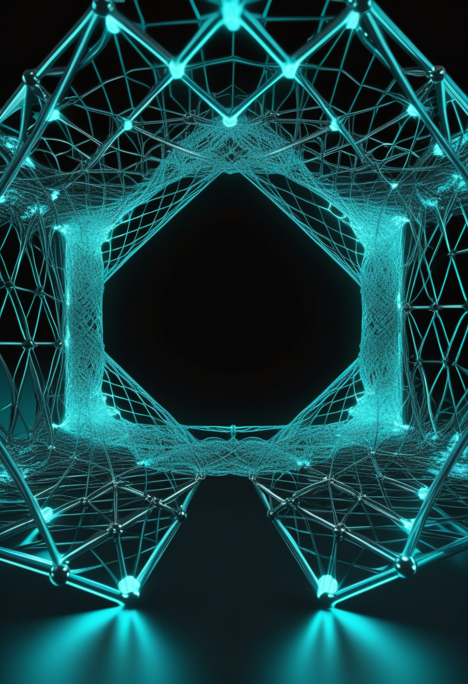
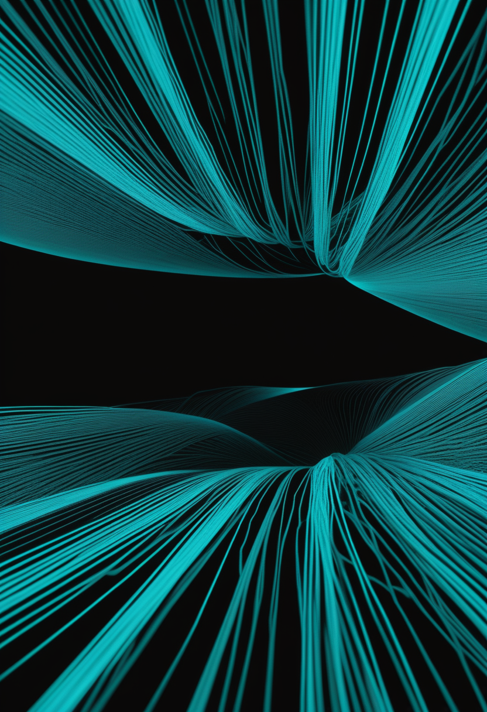
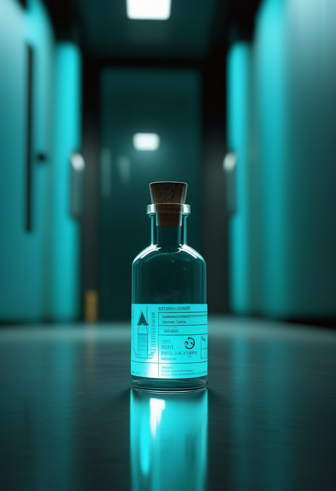
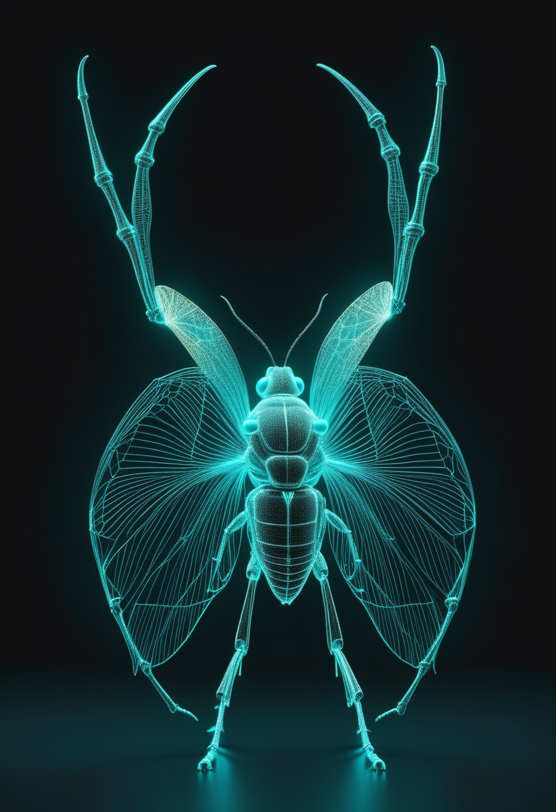

水曜日の便り。2026年のノーベル物理学賞は、南極の氷1立方キロメートルを検出器に変え、宇宙起源の高エネルギーニュートリノを捉えたフランシス・ハルツェン氏(ウィスコンシン大学マディソン校)に単独で贈られた。前日発表の生理学・医学賞(光遺伝学)と合わせ、今年は『見えないものを見る道具をつくった人』が2日続けて選ばれた。基盤の章では、コンゴ民主共和国のエボラが増加の『踊り場』に入りつつも致死率約48%の重さは変わらず、対応中のMSF医師も感染してオランダへ搬送されたこと、ロシアの研究所で技師が原因不明の症状で死亡したこと、ザンビアがコレラの流行を宣言したことを届ける。自由の章では、NeuralinkとSynchronの新しい一歩、USCとKAISTの新型インタフェース、視線入力の『見るだけで押してしまう』問題への解法を取り上げる。美の章では、ショウジョウバエの全脳エミュレーションが『歩いた』実証と、人がAIの意識をどう見積もるかを問う研究を届ける。命の章では、神奈川県で始まった新生児スクリーニングの公費化を伝える。
スウェーデン王立科学アカデミーは10月6日、2026年のノーベル物理学賞をフランシス・ハルツェン氏(ベルギー出身、ウィスコンシン大学マディソン校)に単独授与すると発表した。授賞理由は『IceCubeニュートリノ観測所への決定的な貢献と、宇宙起源の高エネルギーニュートリノの発見』。南極点の氷1立方キロメートルに光センサーを埋め込み、物質とほとんど反応しない『幽霊粒子』の軌跡を捉える構想を1988年に初めて示してから、38年かけて実った成果である。前日に発表された生理学・医学賞(光遺伝学)と合わせ、今年は『見えないものを見る道具』を作った人が2日続けて選ばれた。詳細は畏敬の章で。
神奈川県と横浜市・川崎市・相模原市は10月1日から、脊髄性筋萎縮症(SMA)と重症複合免疫不全症(SCID)の新生児マススクリーニングを、国の実証事業の一環として公費負担で始めた。SMAは発症前に遺伝子治療を受けられれば効果が高く、沖縄県では新たなスクリーニングで発症前の患者を見つけ遺伝子治療につなげた例がすでに報告されている。日本国内の費用分析では、スクリーニングの普及で医療費を約88.5億円節減し、736 QALY(質調整生存年)を改善できるという試算もある(試算値であり要確認)。

Biogenのアンチセンス核酸医薬salanersen(BIIB115)に、FDAがブレークスルーセラピー指定を与え、後期試験段階に入った。ゾルゲンスマ(オナセムノゲン アベパルボベク)で既に治療を受けた乳児を対象とする試験が2026年9月に始まり、遺伝子診断済みで発症前の乳児を対象に運動発達と安全性を調べる試験も並行して進む。既存治療を受けた後の『積み残し』にどこまで届くかが焦点になる。
小児集中治療室に入院した乳児25人の自発運動を、コンピュータビジョンで解析した研究が報告された。手足の動きのパターンから神経筋疾患の兆候を早期に捉えられるかを探るもので、SMAを含む診断の補助になり得るかが検討されている。侵襲を伴わず、ベッドサイドで継続的に観察できる手法として、新生児スクリーニングを補う役割が期待される。
発症前に見つける制度と、見つけた後にどう治療を重ねるかという研究が、同じ時期に並んで進んでいる。スクリーニングも薬も、単独では意味をなさない。

Neuralinkは10月1日、参加者が2年間の臨床使用で生成した5万時間超の皮質内記録を使ってデコーダーを事前学習させる技術ノートを公開した。参加者ごとの個別調整(再キャリブレーション)を減らすのが狙いで、一部参加者では週55分から週10分に短縮。参加者P15のカーソル操作の情報伝達速度は11.32ビット/秒に達し、従来記録の10.39ビット/秒を更新した。査読を経た臨床論文ではなく、企業自身による工学的な報告である点には留意が必要。
Synchronは、AppleのBCI用ヒューマンインターフェースデバイス規格(BCI-HID)にネイティブ対応した最初のBCI企業になった。Bluetoothベースの仕組みで、脳活動をiPad・iPhone・Apple Vision Proに直接つなぐ。同社は製品化に備えて2億ドルを調達し、オーストラリアと米国の複数の患者に埋め込みを実施済み。頭蓋骨を開けるNeuralinkと異なり、血管内にカテーテルで留置する第1世代の低侵襲設計が特徴である。
南カリフォルニア大(USC)の研究者が10月6日、記憶・運動・情動など複雑な脳機能をより鮮明に捉えられる、目的別に設計を変えられる脳インプラントを発表した。将来はAIと組み合わせ、体験がどのように長期記憶として定着するかを読み解き、記憶を補う『メモリー・プロテーゼ』研究へつなげる狙いがある。
KAISTのイ・サンワン教授らがMicrosoft Research Asiaと共同で、AIの出力が本人の意図とずれた瞬間に脳に現れる『誤り関連電位』を検出し、AIがその場で行動を修正する技術『Neural Value Alignment(NVA)』を開発した。言葉や身振りに頼らずに人の意図とAIの出力を合わせる、非侵襲BCIの新しい応用である。
視線入力は、目が『見る器官』と『指し示す装置』を兼ねるため、ただ見ただけの注視が意図しないクリックになりやすい(ミダスタッチ問題)。現行の注視時間しきい値(500〜1000ミリ秒)は入力速度を毎分5〜10語に抑え、疲労も招く。2026年の研究では、利用者が自発的に『注視で起動し視線ジェスチャーや瞬きで実行する』二段構えを編み出すことが示された。別の研究は、動作前に脳に現れる予期信号から意図を先読みし、参加者ごとに75〜97%の精度で分類している。
侵襲型は『どれだけ速く正確に読めるか』を、視線入力は『読まないべきものをどう読まないか』を競っている。USCとKAISTの成果は、読むだけでなく補正し書き込む方向への広がりを示す。
コンゴ民主共和国のブンディブギョ型エボラで、Africa CDCのジャン・カセヤ事務局長が症例増加の『踊り場(プラトー)』を認め、『わずかな減少』も見られると述べた。ただし流行が『制御下にない』との判断は変えていない。10月2日時点で確定8,442例・確定死亡4,080人(致死率は確定例ベースで約48%)。対応にあたっていた国境なき医師団(MSF)欧州出身の医師が9月29日に陽性となり、10月1日にオランダ・ライデン大学医療センターへ医療搬送された。現場の医療者が負うリスクの高さを改めて示す事例である。

シベリア・シェレホフのイルクーツク抗ペスト研究所で、28歳の女性検査技師が9月29日に入院し、10月1日から2日にかけての夜間に死亡した。約200人が観察下に置かれている。ロシアの消費者権利保護・福祉監督庁は『原因不明の肺炎』とし、広範な検査でも職務関連の微生物は検出されなかったと説明する一方、地方メディアは生きたペスト菌の試験管破損、別の報道はタイ帰国後の肺ペスト発症を伝え、説明は一致していない。肺ペストと確定した公式発表はなく、要確認の状態が続く。
ザンビア保健省は9月30日、コレラの流行を宣言した。9月29日時点で304例(うち検査確定62例)、死亡11人。5州7県で患者が報告され、最多のルサカは130例(確定39例)・死亡4人で94人が回復、32人が治療中。発端は8月13日、チボンボ県から移動してルサカの病院に入院した患者からコレラ菌が確認されたことだった。
静かな夏を経て、H5N1が米中西部の家禽に戻ってきた。ミネソタ州スターンズ郡の七面鳥農場2カ所で計10万8,400羽が影響を受けた。カンボジアでは病鳥と接触した49歳の養鶏場作業員が9月27日に陽性となり、同国で今年6例目のヒト感染となった。米国内では麻疹が10月1日時点で全国3,887例となり、排除宣言後の最多を更新している。
エボラは『規模』から『速度』の議論に移ったが、致死率約48%の重さと『制御下にない』という判断は変わっていない。踊り場は終息ではなく、監視を緩める理由にはならない。
スウェーデン王立科学アカデミーは10月6日、2026年のノーベル物理学賞をフランシス・ハルツェン氏に単独授与すると発表した。授賞理由は『IceCubeニュートリノ観測所への決定的な貢献と、宇宙起源の高エネルギーニュートリノの発見』。ベルギー生まれでウィスコンシン大学マディソン校教授、IceCubeの主任研究者を務める。南極の氷1立方キロメートルに光センサーを敷き詰め、ほとんど何とも反応しない『幽霊粒子』の足跡を捉える構想を1988年に初めて提示した。前日発表の生理学・医学賞(光遺伝学、本紙10/6号既報)と合わせ、今年は『見えないものを見る道具をつくった人』が2日続けて選ばれたことになる。
約270光年先の白色矮星HS 0209+0832の大気から、白色矮星としては初めてとなる高い濃度のニオブが見つかった。この特異な組成は、惑星が恒星の誕生時ではなく、恒星が死ぬ間際に放出した物質から生まれた『第2世代惑星』(ガス惑星とみられる)が存在する可能性を示す。恒星が死んだ後にも、新しい世界が生まれ得るという見方を後押しする発見である。
CERNはLHCの一部解体を進め、28台の超伝導磁石を交換する作業に入った。2030年から稼働する高輝度LHC(衝突頻度を大幅に高めた次世代仕様)への備えである。中国科学院は10月1日、2030年までに10件超の『極限フロンティア』研究で国際的な主導をめざす計画を発表した。観測・加速器という大型装置の更新が、基礎科学の次の10年を静かに準備している。
今年のノーベル賞は物理・医学ともに『見えないものを見る道具』を選んだ。氷で宇宙ニュートリノを、光で神経回路を可視化した功績である。ハッブルの白色矮星とCERN・中国科学院の備えは、観測と装置そのものを更新し続ける営みの地味な積み重ねを映す。

Eon Systemsは、FlyWireコネクトーム(全神経回路の結線図)に基づく13万9,255個のニューロンを物理シミュレーション上の身体につなぎ、生物のコネクトームが物理的な身体をリアルタイムに制御する初の実証を行った。学習データを与えていないのに、歩く・毛づくろいする・摂食するという複数の行動が現れたという。『地図を描く』段階から『身体を動かす』段階へ越えた事例として扱われている。
ミュンヘン大(LMU)のチームがCognition誌に発表した研究では、約1,100人の参加者が、まったく同じ振る舞いをする人間とAIを評価した。AIは『意識』では人間より低く評価され、最も反応のよいAIでも最も反応の乏しい人間を大きく下回った。一方で『気づき(awareness)』の評価差はほぼ消え、どの言葉で問うかが判断を大きく左右することが分かった。
故人の個人データや録音をもとに会話するAIアバター『デスボット』を分析した論文は、これらが記憶やつながりを単純化してとらえ、デジタルな追悼の複雑さを覆い隠すと指摘する。しばしば欺瞞的で商業的に搾取的な実践の、倫理的・感情的な影響が軽視されていると論じている。
身体を得たハエの神経回路、意識を見積もる人の目、記憶を単純化するデスボット ― どれも『模した何か』と『本物』の境を問い直す。測る解像度が上がるほど、その境は単純な線ではなくなっていく。
水曜日の便り。2026年のノーベル物理学賞は、南極の氷を望遠鏡に変えてニュートリノ天文学を開いたフランシス・ハルツェン氏に贈られた。基盤の章では、DRCのエボラが増加の踊り場に入りつつも対応中のMSF医師が感染したこと、ロシアの研究所での技師死亡、ザンビアのコレラ流行宣言、米中西部のH5N1再燃を届けた。自由の章では、NeuralinkとSynchronの進展、USCとKAISTの新型インタフェース、視線入力のミダスタッチ問題への解法を伝えた。美の章では、ショウジョウバエの全脳エミュレーションが歩いた実証と、人がAIの意識をどう見積もるかを問う研究を取り上げた。命の章では、神奈川県の新生児スクリーニング公費化とsalanersenのブレークスルーセラピー指定を届けた。
では、また明日の朝に。 — JaH